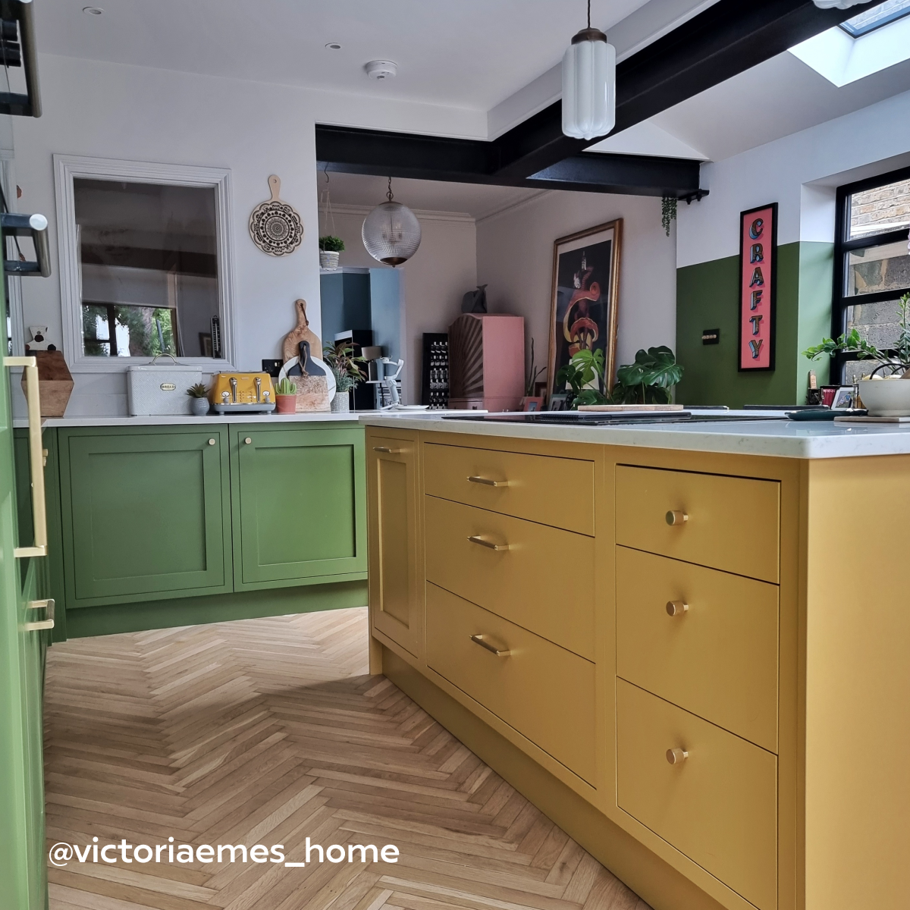
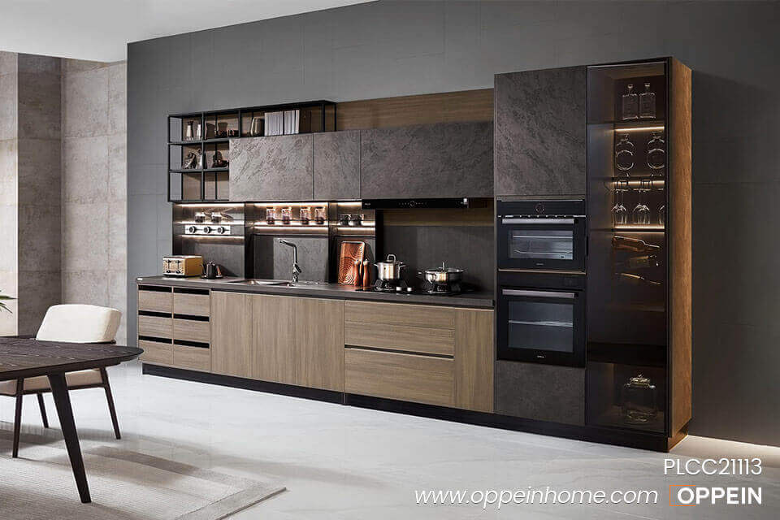
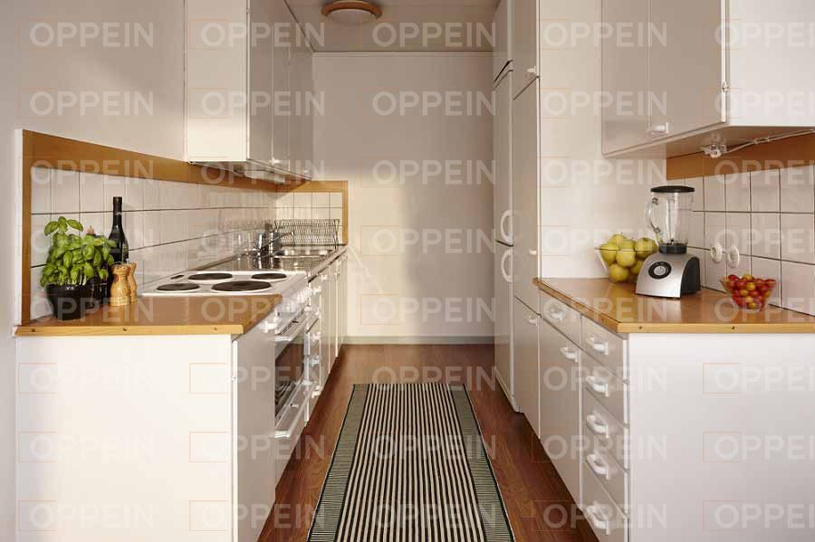

Examples of kitchens
Island kitchen

With rising interest in
open concept homes, island kitchens have become very popular. They provide a large work surface and storage
space in the
middle of the kitchen and can serve as a great addition to any of the other kitchen layouts if space allows.
Islands can serve multiple purposes. They can include a sink for food preparation, a fridge or cooler for
beverages, and cabinets for extra storage. They’re also a great place for family members and guests to
gather
around, especially with the addition of a few stools for sitting.
One wall kitchen
Ideal for
smaller spaces or studio apartments, the one wall kitchen maximizes functionality in a compact layout. All
appliances, cabinets, and countertops are placed along a single wall, optimizing space efficiency. Clever
storage solutions are essential to keep the kitchen organized and clutter-free. This style is perfect for those
who seek simplicity and efficiency without compromising on style and functionality.
Galley Kitchen
Galley kitchens are
characterized by
parallel countertops and a narrow layout, similar to a ship's galley. They are efficient and maximize space
utilization. Galley kitchens often feature sleek and modern designs, with streamlined cabinets and appliances.
This style is perfect for those who value functionality and efficiency in their kitchen space, as the layout
allows for easy movement and workflow.
Home
Bedroom
Bathroom
Order
Back to Top